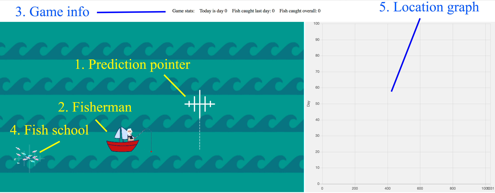

Please read the instructions carefully before proceeding
In this game, you will take the role of a fisherman trying to catch as many fish as possible. There is a single school of fish in sea where you work, which moves location from day to day. Each day, you need to determine the location where you will fish. If you fish in the centre of the school of fish, you will catch the maximum number of fish, and the further you fish from the centre, the smaller the catch. You thus need to carefully predict where the school of fish will be each day. The more accurate your prediction is, the more fish you will catch.
In the game, you will fish for a total of 100 days. So you will make 100 predictions, and will have 100 chances to catch fish. At the end of the game, you can enter a draw for two Amazon vouchers (one for £50 and one for £20). Your chance of winning the vouchers will depend on the number of fish you catch. The person with the lowest score gets one ticket in the draw, the second-lowest gets 2 tickets, etc.
The image below shows what the game looks like. To make your prediction, you position the prediction pointer (1) using your mouse. You should aim to place the prediction pointer at the centre of where you think the fish school (4) will be. By pressing the left button on your mouse (left-click), you finalize your prediction and you will try to catch fish at that location. The fisherman (2) will move to the location and you will then be informed of the number of fish you catch that day.
On the right hand side you will see a location graph (5) which displays the locations of the fish school on each previous day. On the top of the screen you will see the game information panel (3), which shows the current day and how many fish you have caught in total.
